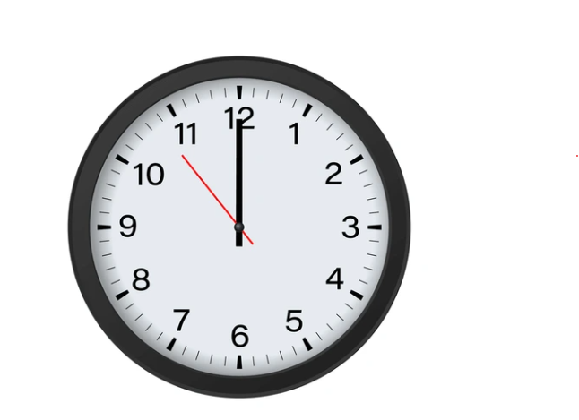

Emergency Department Operational Tableau Dashboard
A Tableau Dashboard used used by stakeholder to monitor key metrics in a Emergency Department. The projects highlights importance of client requirements as documented in a Data Dictionary, use of Data Modeling with diagrams, and finally an overview of key insights gained by client from Dashboard.
Deep Learning Classification with Keras Convoluational Neural Networks
Keras Deep Learning Convolutional Neural Networks are used to identify microscopic images of white blood cells.
The algorithm is trained to classify cells as malignant or benign based on textural and coloristic characters of the cells.
When introduced to large number of training images, the classifier may identify malingnant cells with 98% accuracy!
Medical Laboratory Application - SQL Database Design and Python Application Development
A full stack web application is developed using Python coding connected to a SQL Database designed from scratch using client requirements. The full development process is demonstrated in this tuturalized project starting from designing client workflows to database design to developing of Python coding to create an application used for a clinical laboratory. Many business problems or functions needed by the laboratory or resolved by the application not limited to storing lab results, quality control rulesets and visualizations, creating lab test orders, and the ability to even produce barcordes for specimens.

Predicting Emergency Room Length of Stay with Sci-Kit Learn Machine Learning Regression Models
Python Sci-kit Learn machine learning library is utilized to create models to help an hospital predict emergency room 'Length of Stay' for patients. The information is both financially and operationally vital as these developed Regression Models aim to output Length of Stay in minutes from various key data inputs. This end-to-end machine learning project is document in completeness in a Jupyter notebook and highlights key processes in the machine learning landscape such as Model Validation and Hyperparameter Tuning.
Scikit Learn Models: Random Forest Regression Support Vector Machines Regression Linear Regression